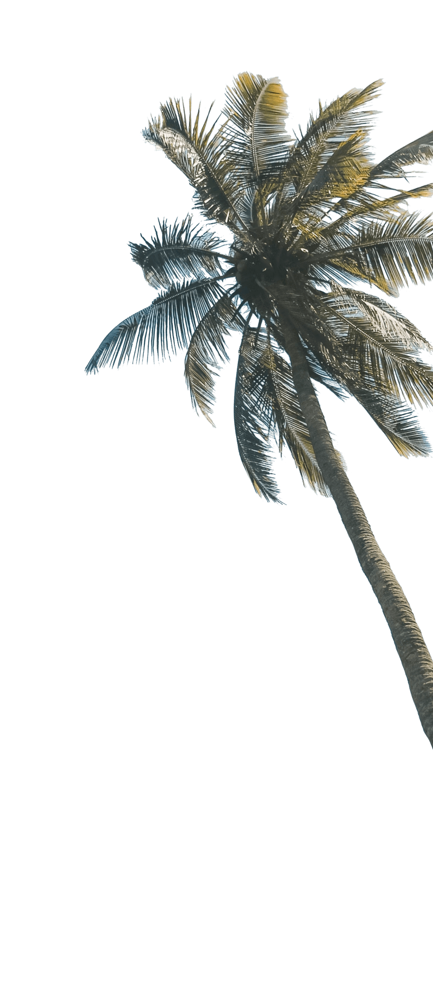
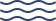

1%
of global
Más azul, más verde, más sostenible
Cómo los pequeños Estados insulares en desarrollo están liderando la acción climática

El Ministro de Asuntos Exteriores de Tuvalu, Simon Kofe, pronunció un duro mensaje en la Conferencia de la ONU sobre el Cambio Climático de 2021 (COP26).
Y lo hizo de forma (no tan) simbólica, con el agua hasta sus rodillas. El nivel del mar ha aumentado 10 cm en los últimos 29 años, según la NASA.
Pero salgamos del agua por un momento.
Más azul, más verde, más sostenible
Cómo los pequeños Estados insulares en desarrollo están liderando la acción climática

Nos
estamos
hundiendo
estamos
hundiendo
El Ministro de Asuntos Exteriores de Tuvalu, Simon Kofe, pronunció un duro mensaje en la Conferencia de la ONU sobre el Cambio Climático de 2021 (COP26).
Y lo hizo de forma (no tan) simbólica, con el agua hasta sus rodillas. El nivel del mar ha aumentado 10 cm en los últimos 29 años, según la NASA.
Pero salgamos del agua por un momento.

Pequeños grandes desafíos
El caso de Tuvalu no es único: todos los pequeños Estados insulares en desarrollo (PEID) se enfrentan a vulnerabilidades medioambientales, sociales y económicas similares.
A menudo geográficamente remotos y con superficies pequeñas, estos Estados tienden a depender en gran medida de las importaciones de alimentos y energía. Sus principales actividades económicas suelen centrarse en el turismo, lo que deja poca flexibilidad para adaptarse a crisis como la pandemia de COVID-19.
Aunque unos pocos PEID se consideran países menos desarrollados (PMA), la mayoría están clasificados como países de ingresos medios. Cuando se produce una catástrofe climática (lo cual ocurre con más intensidad en los PEID que en los países continentales, como advirtió recientemente el IPCC), los recursos de respuesta suelen ser escasos debido al menor acceso a las condiciones de financiación favorables de que disponen los PMA.
Los pequeños Estados insulares no cuentan con el privilegio del tiempo.
Los PEID se encuentran en la primera línea del cambio climático, sintiendo los impactos primero y de manera más severa, aunque contribuyen con menos del 1 % de las emisiones globales de carbono.
Ali Shafeeq, miembro del consejo local de Dharavandhoo de las Maldivas, no es ajeno a los efectos del cambio climático: "La calidad del agua subterránea actualmente es tan mala que ni siquiera me arriesgo a que mis hijos se cepillen los dientes con ella. Usamos agua embotellada".
En 2017, cuando el huracán Irma devastó Antigua y Barbuda, situada en el llamado "cinturón de huracanes", destruyó el 95 % de las viviendas y dejó un tercio del país inhabitable. A medida que las temperaturas siguen subiendo, se espera que los huracanes sean más frecuentes y más destructivos en los próximos años.
Arbi Rubon, nacida y criada en Ebon, en las Islas Marshall, explica que su comunidad sabía que debían prepararse para la cosecha cuando florecía el Lukweej (Calophyllum inophyllum), pero debido a la irregularidad de las lluvias y al aumento de las temperaturas del aire, el árbol ya no florece en la temporada que le corresponde.
El cambio climático nos afecta a todos, aunque no por igual. Los PEID se llevan la peor parte, pero todos estamos en el mismo barco. Según la Organización Meteorológica Mundial, los principales indicadores globales de la crisis climática batieron récords en 2021.


SIDS are on the frontlines of the climate crisis. But they are also at the forefront of climate solutions.
Pequeñas grandes oportunidades


Pequeñas grandes oportunidades
Sí, los PEID están en la primera línea de la crisis climática. No obstante, también están a la vanguardia de la acción climática.
Muchos PEID se han comprometido a impulsar políticas para alcanzar cero emisiones netas y un futuro resiliente al clima, incluso a través de planes nacionales de acción climática actualizados y ambiciosos, conocidos como Contribuciones Determinadas a nivel Nacional (CDN). De hecho, algunos están entre los primeros países del mundo en hacerlo oficialmente:
-

Para el 2030, Barbados promulgará políticas para convertirse en el primer Estado insular del mundo 100 % verde y sin combustibles fósiles.
-
Antigua y Barbuda tiene como objetivo capacitar al 100 % de la mano de obra que trabaja con nuevas tecnologías de mitigación para una transición de bajas emisiones de gases de efecto invernadero para 2030.
-
Suriname se ha comprometido a lograr el 100 % de energía renovable para 2030 y, para 2050, garantizar el acceso a la energía para todas las personas.
De las promesas a las acciones
Algunos PEID ya se han puesto manos a la obra. En Samoa, el PNUD colabora con CRDC Global, un socio del sector privado, para aportar soluciones circulares integradas para gestionar los residuos plásticos, centrándose en la recolección, el reciclaje y la reutilización de los desechos plásticos en productos de construcción.
Cuba tiene una proporción particularmente alta de costa y, como consecuencia, gran parte de su población es vulnerable a las amenazas relacionadas con el cambio climático. Los manglares, que cubren el 70 % de la costa, desempeñan un papel fundamental en este contexto, ya que conforman barreras naturales que reducen los efectos de los vientos y las olas durante las tormentas y las mareas altas.
"Hace seis años, el manglar no crecía más de un metro de altura", dice María Teresa. Ahora una iniciativa de restauración impulsada por la comunidad materializa lo mejor de la adaptación basada en los ecosistemas y desde 2008 se han replantado 213.400 hectáreas de manglares y bosques. "Aquí ahora puedes respirar un mundo saludable", señala María.
La isla de Ndzouani, en las Comoras, era conocida por su potencial de aguas superficiales y su dinamismo agrícola. Sin embargo, ha perdido más de la mitad de sus ríos debido a una combinación de deforestación y cambio climático. Se calcula que para 2090 la isla sufrirá una reducción de las precipitaciones de hasta el 47 % durante la estación seca. La campaña Un comorano, un árbol tiene el objetivo de plantar 613.000 árboles en 571 hectáreas de terreno en todo el país que mejorarán el acceso al agua y protegerán los ecosistemas vulnerables.

Considera lo siguiente:
el 97 % del agua de la Tierra se encuentra en el océano.
el 97 % del agua de la Tierra se encuentra en el océano.
El océano tiene un enorme potencial: es uno de los mayores reservorios de carbono de la Tierra, dado que contiene 50 veces más carbono que la atmósfera, y da trabajo a 150 millones de personas a nivel mundial.
Sin embargo, ha absorbido cerca del 30 % de todas las emisiones de CO2 producidas por el ser humano. Como resultado, se ha calentado provocando el incremento del nivel del mar.
Cuando el agua se calienta demasiado, los ecosistemas sufren, como los arrecifes de coral, que liberan sus coloridas microalgas y se vuelven de un blanco esquelético. Más del 90 % podría perderse para 2050.
El océano es un mecanismo de contención vital contra los efectos del cambio climático: protegerlo significa proteger nuestro futuro.
97%
of earth water is in the ocean
Considera lo siguiente:
el 97 % del agua de la Tierra se encuentra en el océano.
el 97 % del agua de la Tierra se encuentra en el océano.
El océano tiene un enorme potencial: es uno de los mayores reservorios de carbono de la Tierra, dado que contiene 50 veces más carbono que la atmósfera, y da trabajo a 150 millones de personas a nivel mundial.
Sin embargo, ha absorbido cerca del 30 % de todas las emisiones de CO2 producidas por el ser humano. Como resultado, se ha calentado provocando el incremento del nivel del mar.
Cuando el agua se calienta demasiado, los ecosistemas sufren, como los arrecifes de coral, que liberan sus coloridas microalgas y se vuelven de un blanco esquelético. Más del 90 % podría perderse para 2050.
El océano es un mecanismo de contención vital contra los efectos del cambio climático: protegerlo significa proteger nuestro futuro.
El azul también puede ser verde


El azul también puede ser verde
El océano es fundamental para el desarrollo sostenible en todo el mundo y en particular para los PEID, pues proporciona una amplia variedad de beneficios sociales y económicos, al mismo tiempo que está estrechamente vinculado a las culturas insulares.
Los PEID están aprovechando este entorno para diversificar sus economías, aumentar la resiliencia frente a las crisis y mantener millones de medios de vida, a la vez que preservan y restauran los ecosistemas marinos y costeros, protegen el patrimonio cultural y revierten la pérdida de biodiversidad.
Impulsar la economía azul puede ayudar a los PEID a alcanzar no solo el Objetivo de Desarrollo Sostenible (ODS) 14 sobre la vida submarina, sino también los ODS de pobreza, hambre, igualdad de género, crecimiento económico, trabajo decente, clima y mucho más.
Seychelles está demostrando que el azul también puede ser verde. E incluso puede ir más allá. A través de una zona protegida que cubrirá el 30 % del territorio oceánico del país (el equivalente al tamaño de Alemania), demuestra que la conservación puede ir de la mano del desarrollo económico sostenible.
En el océano Pacífico Occidental y Central, 14 PEID han trabajado conjuntamente para crear la primera pesquería de atún 100 % sostenible del mundo, generando unos USD 500 millones al año en ingresos y creando 10.000 nuevos puestos de trabajo.
La República de Mauricio, a través del proyecto Ecofish, está mejorando y reforzando la sostenibilidad económica, social y medioambiental de la comunidad de pescadores artesanales.

Sustainable development in SIDS is a complex endeavor, but if its potential is fully harnessed, challenges can be turned into big opportunities for the entire world.
Todo lo bueno...
…no longer in a small pond

Movilizándonos por los PEID
El desarrollo sostenible en los PEID es una tarea compleja, pero si se aprovecha al máximo su potencial, los desafíos pueden convertirse en grandes oportunidades para todo el mundo. Como dijo el Ministro de Asuntos Exteriores de Tuvalu en la COP26, los PEID ofrecen hoy una visión de futuro para todos.
"Nos estamos hundiendo", dijo. "Pero también se está ahogando todo el mundo. Y no importa si sentimos los impactos hoy como en Tuvalu o dentro de 100 años, todos seguiremos sintiendo los terribles efectos de esta crisis global”.
En este contexto, Rising Up for SIDS, la oferta integrada del PNUD para los PEID pretende responder a las necesidades más urgentes, fortaleciendo la resiliencia a través de la acción climática, impulsando la economía azul y acelerando la transformación digital.
Los PEID han demostrado ser pioneros en muchos aspectos. Es tarea de todos mantenerlos a flote.